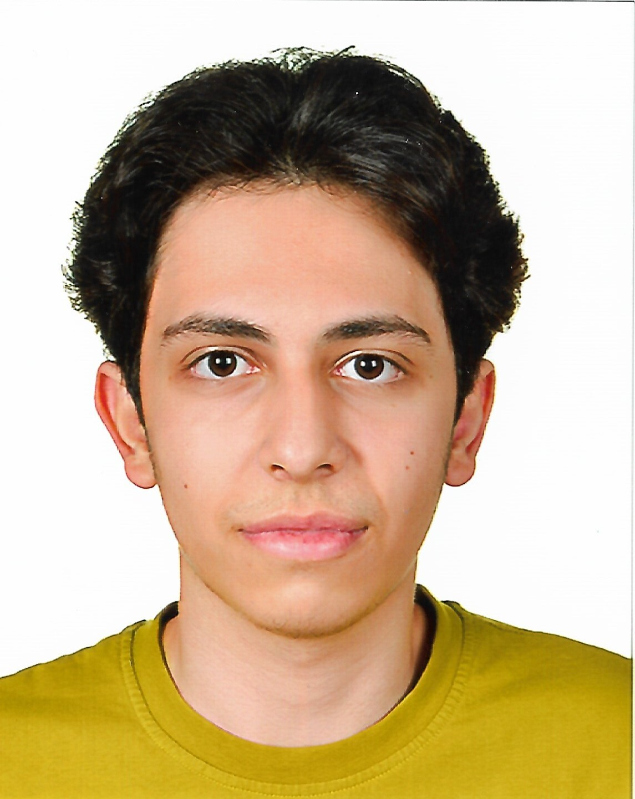

Merhaba, ben Ubeyde Elnabulsi. 2007 doğumluyum ve aslen Suriye/Şamlıyım. 2012 yılında Türkiye’ye geldim ve eğitim için sakaryaya gelmeden istanbulda ikamet ediyordum. Eğitim hayatıma Sakarya Üniversitesi Bilgisayar Mühendisliği bölümünde birinci sınıf öğrencisi olarak devam etmekteyim.
Bilgisayar mühendisliğini tercih etmemdeki temel neden, çocukluk yıllarımdan itibaren teknolojiye duyduğum köklü ilgidir. Bunun yanı sıra, bilgisayar mühendisliğinin son derece geniş bir çalışma sahasına sahip olması ve bu alanda elde edilecek bir başarının dünya genelinde büyük bir etki yaratma potansiyeli beni bu mesleğe yönlendirdi. Mesleğin, çağımızın en kritik ve dönüştürücü alanlarına doğrudan kapı açması, kariyer yolculuğumdaki en büyük motivasyon kaynağımdır.
Tüm bu akademik temeller doğrultusunda asıl vizyonum, eğitim sürecimi en verimli şekilde tamamlayarak gelecekte Yapay Zeka (AI) alanında uzmanlaşmaktır. Dünyayı şekillendiren bu teknolojinin bir parçası olmak ve bu alanda yenilikçi çözümler üretmek temel kariyer hedefimdir.
Profilim ve çalışmalarım hakkında daha fazla detay için sayfamı inceleyebilir, benimle iletişim bölümünden doğrudan irtibata geçebilirsiniz.
Okuduğum üniversite:
Bölümümün web sitesine gitmek için: Sakarya Üni. Bilgisayar Mühendisliği
Projelerimi paylaştığım hesabım: GitHub Profilim